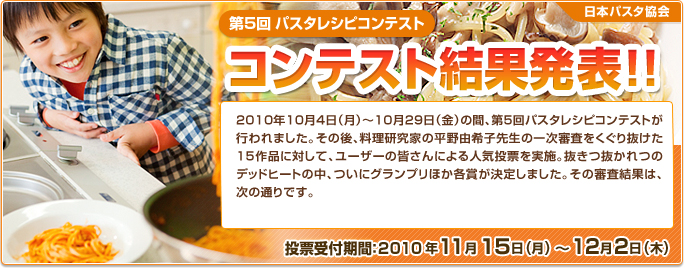
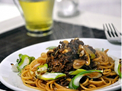
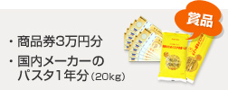
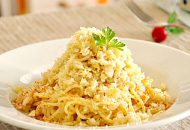
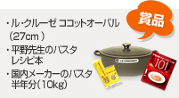
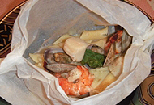
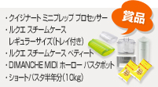
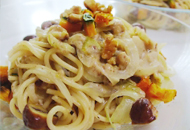
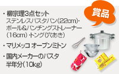

- 10月4日（月）〜
10月29日（金）

- 最終審査に残る作品を各部門5つ選出します。
計15作品となります。

- 最終審査員はユーザーのみなさんです。最も得票数が多かったレシピがグランプリとなります。

- 12月17（金）にサイト上で発表します。


- 下仁田ネギと肉味噌のパスタ
- shunsk

- 下仁田ネギと肉味噌のパスタ。

- 誰もが「おいしそう！」と思うような組み合わせですね。寒くなるとおいしさが増す、下仁田ねぎのとろりとした甘味、こっくりとした肉味噌との組み合わせで、食がすすみそうです。下仁田ねぎの半分は炒め、半分はトースターで焼くなど、ねぎの甘さを引き出す調理法も工夫されています。この冬、ぜひ、つくってみたいパスタです。
- 


- 明太子とコールスローのパスタ
- shunsk
- ひと手間加えたコールスローに明太子をあわせてみました♪
- 明太子パスタは、いろいろなアレンジレシピがありますが、ありそうでなかったのが、サラダアレンジのパスタ。野菜でボリューム、ヘルシーさともにアップ。キャベツのしゃきしゃき感もパスタの食感をより楽しくしています。マカロニやファルファッレ、フジッリなどのショートパスタでつくってみるのもおすすめです。
- 

- ペンネの包み蒸し
- ひろくんまま
- ペンネが魚介の出汁で美味しくなります！！
- ヘルシーな料理がつくれる蒸し料理は今、大人気ですが、パスタで蒸し料理というアイディアが新鮮。ペンネはのびにくく、もっちりとしているのが、特徴なので、このレシピには最適です。魚介のうまみを吸ったパスタはうまみたっぷり、香りのよさが魅力。テーブルで紙包み蒸しを開く時に、みんなが笑顔になりそうですね。
- 

- マロンクリームパスタonかぼちゃ＆クルミ
- kozakana
- 栗の美味しい季節ですが使ったのはパウチ型むき栗。扱いやすいです。
- とろりとしたマロンクリームの甘さがパスタに意外なほどによく合います。くるみの食感のアクセントも効いています。ほんのり甘く、クリーミーなソースのパスタは食べているとやさしい気持ちになれそうですね。太めのスパゲティ、ペンネでつくるとバランスがよく仕上がります。ナツメグ、シナモンを加えてアクセントをつけても。
- 



毎年、レシピのレベルがどんどん上がってきているのですが、今年集まったレシピは、とても高いレベルのものばかりでした。
部門賞に選ばれたものはどれも、野菜などの素材使いがうまく、パスタとの組み合わせ方が新鮮。ノミネート作品の中には今年の大ヒットとなった「食べるラー油」をパスタにアレンジしたものなど、今を感じさせるレシピの投稿もありました。調理法も「蒸す」「揚げる」など、一般的にはパスタに使われない調理法を使ったレシピもあり、パスタの新しいおいしさを引き出したレシピに思わず、唸ってしまうほど。
部門賞、グランプリともに、「つくってみたい」「食べてみたい」という魅力に溢れたものが選ばれました。パスタはもっともっと楽しめる。そう思わされるレシピばかりです。ぜひ、今年の冬は、もっとパスタを楽しみましょう。